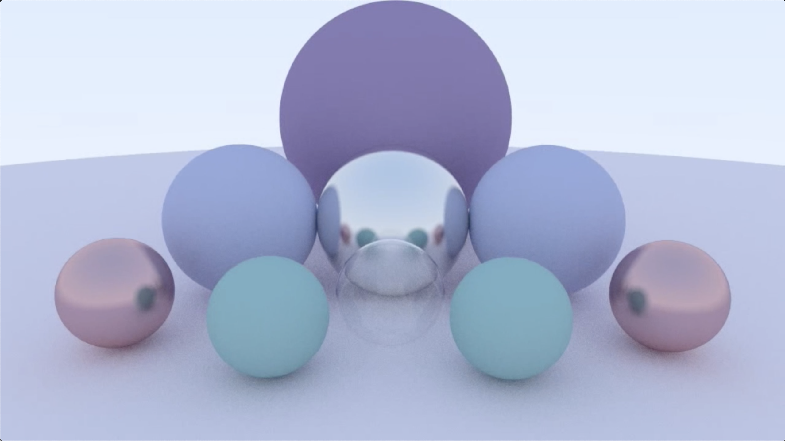
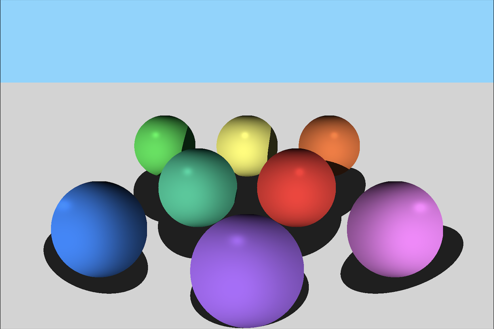
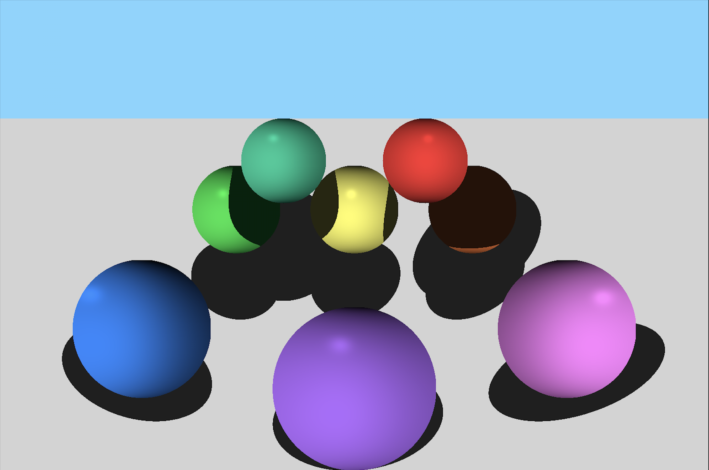
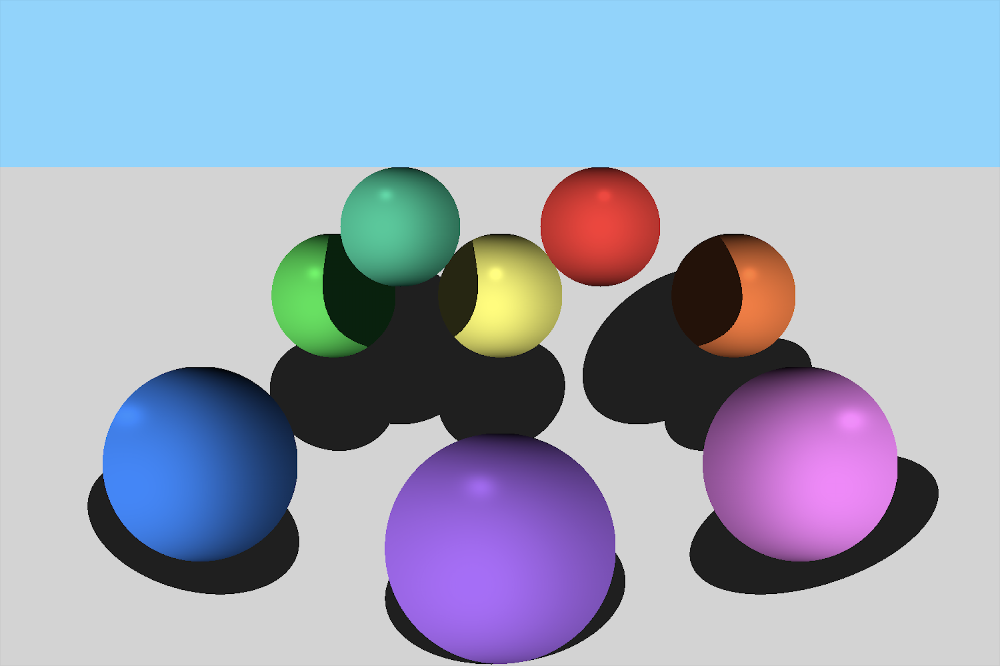
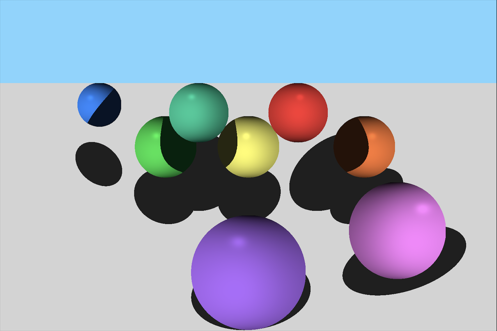
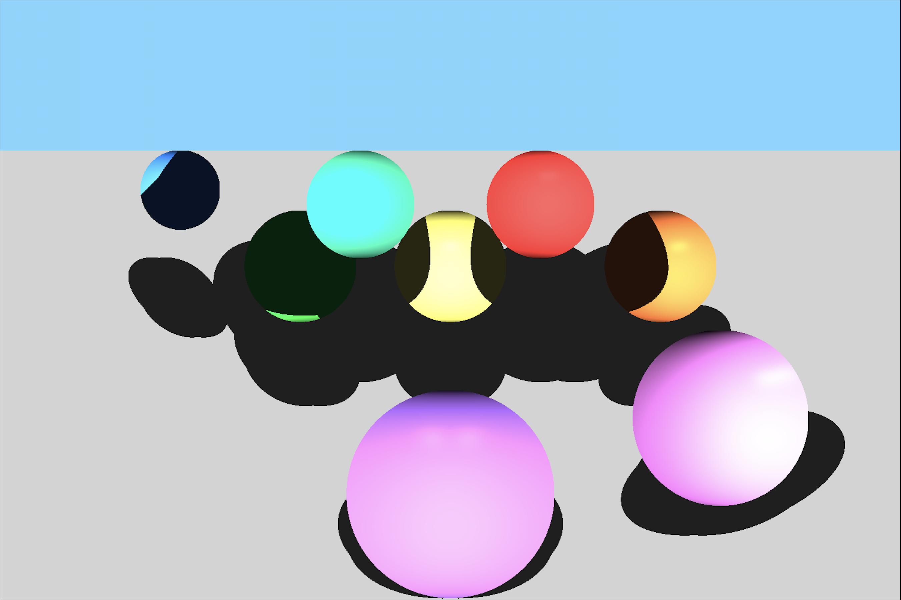
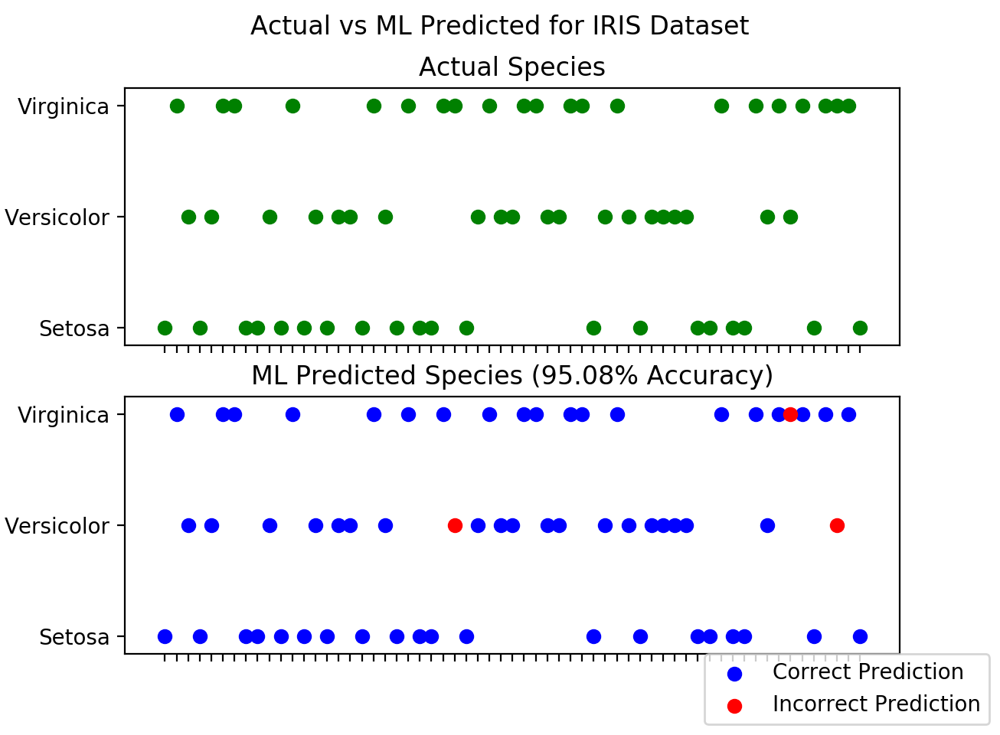
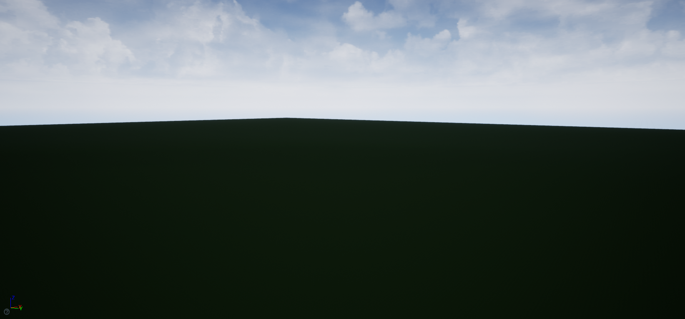
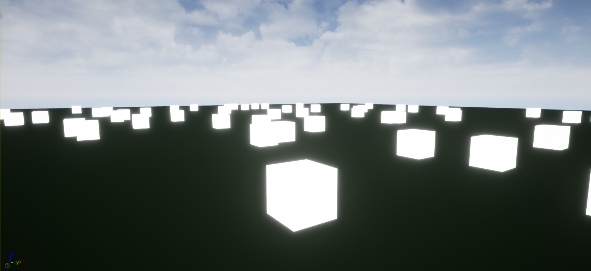
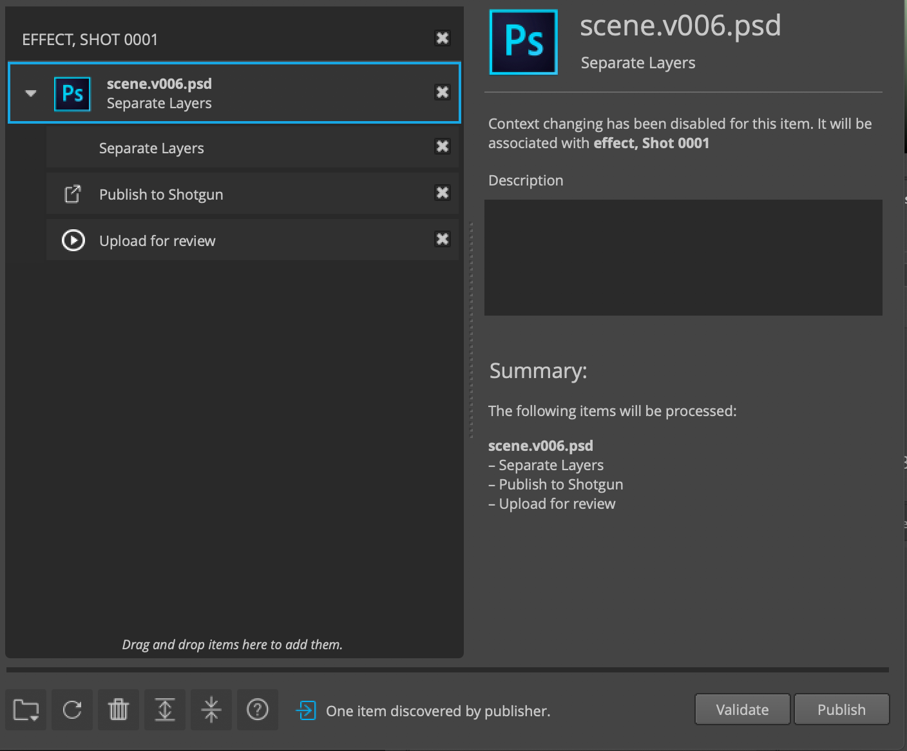

I am a senior at the University of Illinois Urbana Champaign pursuing a major in Industrial Engineering and a minor in Computer Science. I am currently seeking an internship in technology and storytelling, specifically in film, computer graphics, real-time rendering or immersive development. I hope to utilize my creative and technical skillset to help expand the possibilities of storytelling. I am most passionate about the possibilities of real-time rendering and hope to contribute to the evolution of virtual production. In my free time, I love to write/direct short films, train for marathons, travel, and capture moments on Super 8 film!
Ray Tracer built from scratch in C++ implementing phong shading and shadows on spheres. I developed this project to learn more about computer graphics in film.

Cartesian Coordinate System, Sphere Objects, Point Lights and Shading
Sphere objects and point lights can move along the xyz axes. +x -> moving right, +y -> moving up, +z -> out of the screen. In the context of the project,
spheres have a radius, cartesian center point, and color.
Point lights are represented as a point object.
Shading of the spheres is done using the phong shading model where ks = 0.2 and n = 200 for specular lighting.
These values can be modified based on the desired look. Shadows are calculated using the discriminant method.
Creating a Scene
Let's add a few spheres to create a scene. The spheres in this scene all have the same radius, but differ in depth. The point light in this scene is left of the front center sphere at point (600,800,400). The (width,height,depth) of the scene is (1500,1000,-1500).

Transforming Spheres
We can make this scene more interesting by raising two spheres, and casting more shadows. This next render has the teal and red spheres shrinking by 25% and moving up 200 units.

Yay! However, it is hard to see the orange sphere as it is cast in the shadow of the red sphere. Let's move it right 100 units, so it is still partially visible in the scene.

Let's move the blue sphere back some more in the scene, about 600 units.

Lastly for fun we can add another point light to the scene to increase the brightness of each sphere and create some more complex shadows. Second point light at (900,800,400).

Cool stuff! Excited to add more to this project (animations, reflections, shaders etc.) and learn more about building a career in film and animation.
Machine Learning classification model implementing Random Forest algorithm, built in Python from scratch. Tested using the IRIS flower dataset. I developed this project to enhance my understanding of ML/AI technologies.
Model generates decision trees, and saves them into a Random Forest Object. The object is tested for accuracy and scrapped if does not meet the minimum accuracy requirement parameter. Model is trained off of 60% of the datset, and tested using the other 40% it has never been exposed to.
Example 1: ML Model with 95.08% Accuracy
The first plot represents the actual species of certain flowers in the dataset, while the second is the Machine Learning predicted species. The model predicted species correctly 58 times and incorrectly 3 times in this example.

Example 2: ML Model with 96.72% Accuracy
The model predicted species correctly 59 times and incorrectly 2 times in this example.
Short cinematic created in the Unreal Engine using a virtual production workflow. I built this project to expand my understanding regarding the capabilites of real-time in film/animation.
I am extremely passionate about contributing to the field of virtual production to develop methods for creating an organic cinematic language in real-time productions.
Tools Used
I created the environment for this project and used these tools to capture the cinematic: Unreal Engine Sequencer, Apple ARkit (camera tracking/controls), and ffmpeg (rendering final cinematic).
I created two shaders in GLSL to learn more about shading languages in computer graphics, and their applications.
The first shader is of a steel ball with a dynamic background and rotation light source. The second shader implements the Blinn Phong shading model.
Steel Shader
The steel shader has a metallic reflective surface, and dynamic background. The light source orbits the steel sphere.
Blinn Phong Shader
The Blinn Phong shader represents a classic computer graphics shading method, with a moving light source in front of the sphere.
Currently I am learning more about shader programming and building my skillset in GLSL/HLSL.
Procedural generation algorithm built in Unreal Engine C++ to procedurally populate landscapes with certain meshes.
The program uses inputs such as a meshes and landscape dimensions to procedurally populate the landscape with those meshes. This algorithm came in handy for building the environment of my virtual production project.
Empty Landscape

Procedurally Generated Emmisive Cubes in Landscape
The emmisive cube was selected as the mesh for this instance of the program.
The program placed a number of emmisive cubes throughout the landscape.

Procedurally Generated Rocky Terrain in Landscape
Procedurally generating terrain is a very useful application for this program in real-time environments.
The rocky terrain mesh was procedurally placed in the landscape.
Separate layers plugin created for Photoshop-Shotgun integration. Project for my internship with ZERO VFX.
Plugin created to streamline matte-painting artist workflow. Integration with tk-config files required within artist schema.
Validates and publishes the layers of a .psd file to Shotgun.
Plugin Integrated with Shotgun Publish Button
The plugin integrates fully with the Shotgun Publish Button.
This allows artists to publish all their work to Shotgun along with the separate layers generated, ensuring a streamlined workflow.

Plugin Integrated with Shotgun File Validation
The plugin integrates with Shotgun's file validation system, allowing artists to know when errors may occur in their workflow.